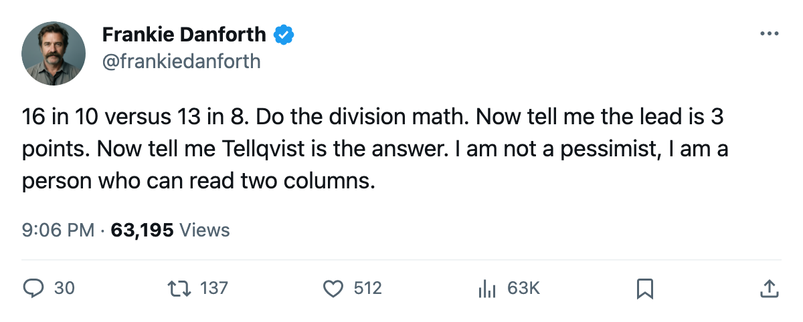

TOR
TOR BOS
BOSDANFORTH: Code Yellow, the 3-point lead that Boston is in front of, and the goalie on a 5-point fall
The standings say Toronto leads the division. The pace says Boston does. And the Bureau's Development Index has the third starter sliding.
 Frankie DanforthColumnist · Queen City Telegram
Frankie DanforthColumnist · Queen City Telegram
Code Yellow
The Panic Meter sits at Code Yellow. Not because we are losing. Because the standings are lying to us, and they will not lie for much longer.
Toronto has 16 points in 10 games. Boston has 13 in 8. Three points separates them in the table, which is the number you see when you glance at the standings on a Sunday morning and feel warm. Boston has 2 games in hand. Play those out at their current pace and Boston is in front. They are 5-1-1 on a 5-game win streak. They have scored 28 goals in 8 games. I do not know what else you need.
The season series between these two clubs reads 0-1-0 to Toronto. Boston won the one game they played. That game was at home. It comes back to Toronto on 11/2, one week from today, with the division on something resembling the line.
The Bureau's Development Index has five Leafs on its riser list.  Marian Gaborik99 is up 11, the second-highest form reading in the league, which gives him a 99 overall and 4 points in 9 games. I have been writing about that since October.
Marian Gaborik99 is up 11, the second-highest form reading in the league, which gives him a 99 overall and 4 points in 9 games. I have been writing about that since October.  Rostislav Klesla87 is up 8,
Rostislav Klesla87 is up 8,  Stanislav Chistov87 up 8,
Stanislav Chistov87 up 8,  Jamie Lundmark81 up 8,
Jamie Lundmark81 up 8,  Rick Nash85 up 7. The Development Index has the form term on the current overall, and the current overall for those five reads above their base by those margins. Fine. Those are good things.
Rick Nash85 up 7. The Development Index has the form term on the current overall, and the current overall for those five reads above their base by those margins. Fine. Those are good things.
Then the Index has Mikael Tellqvist73 at -5. The base is 77, the overall is 73, and the man has 3 starts.  Roberto Luongo95 sits as the G2, the Conn Smythe winner, the Jennings winner, a 97 overall. I do not need you to tell me what I am supposed to do with that. I need someone upstairs to do it.
Roberto Luongo95 sits as the G2, the Conn Smythe winner, the Jennings winner, a 97 overall. I do not need you to tell me what I am supposed to do with that. I need someone upstairs to do it.
I will take the 3-game win streak. I will take the 15 goals allowed in 10 games. I will take the 5-2 home record. I will also tell you that Boston has played 2 fewer games and is on pace to pass us by mid-November, and that the schedule hands them the head-to-head tiebreaker after 11/2 if they win at the ACC.
Code Yellow. The wins are real. The cushion is Boston's schedule, not ours.
